1 2021年搭建Java环境最快办法¶

每次想写Java都被环境折腾困扰，为了解决这个问题，我写下这篇文章，归档到在线电子书，以备不时查看之需。
安装Java¶
Java的安装包是个.exe文件，特殊地方在于文件名不是java-xxx.exe而是jdk-xxx.exe，比如jdk-8u281-windows-x64.exe，jdk是Java Development Kit的缩写，指Java开发工具包，包括以下内容：
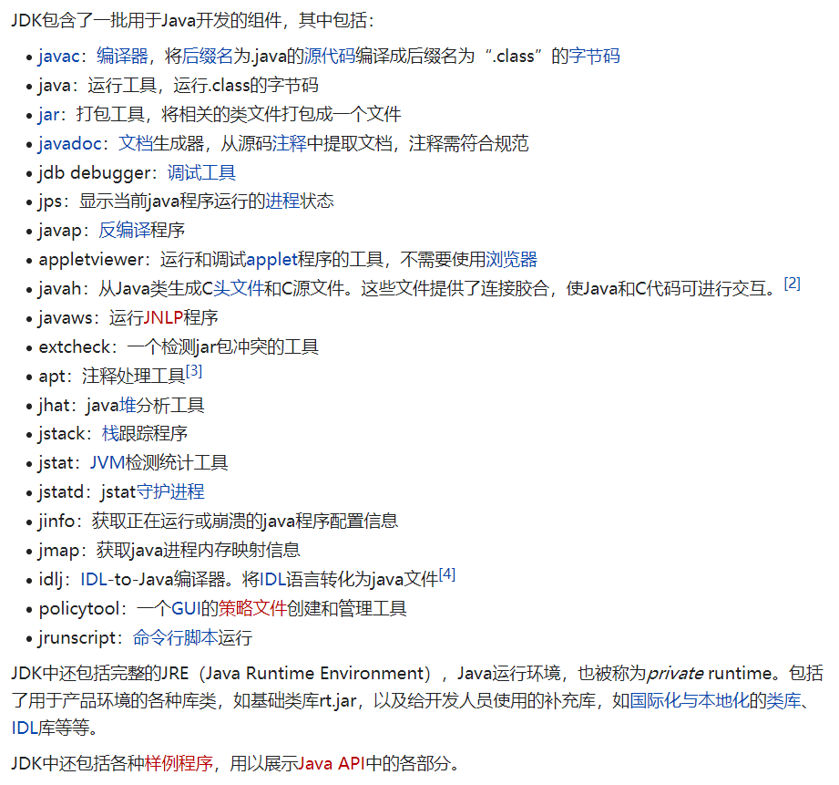
JDK的最新版本为15，但是国内大多数公司仍然使用的是JDK8，这是因为JDK8是各方面都很成熟稳定的版本，并且基于JDK8开发的业务系统已经具有一定规模，新版本JDK并不能完全无感知的迁移，需要做代码修改和测试，会是一笔巨大开销，为了降低成本和规避兼容问题风险，JDK8沿用到了至今。JDK8的下载地址如下：
https://www.oracle.com/java/technologies/javase/javase-jdk8-downloads.html
选择相应的版本下载：
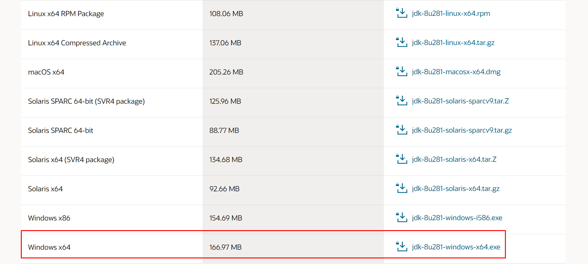
比如我的电脑是Windows
64位的系统，就选择了Windows x64这个版本，会下载到一个jdk-8u281-windows-x64.exe文件。Java已经被Oracle收购了，需要登录Oracle账号后才能下载，没有账号注册一个也很方便：
下载后可以开始安装了：
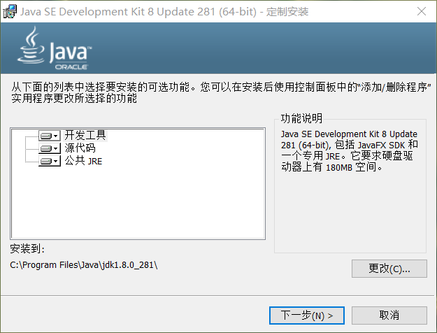
安装到默认位置即可，直接下一步。中途会让选择JRE（Java Runtime Environment，Java运行环境）的目标文件夹：
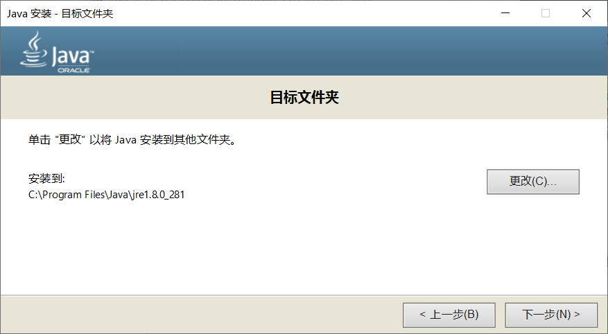
依然保持默认即可。安装结束后就能看到两个新文件夹了：
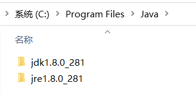
以前，还需要配置系统环境变量，设置JAVA_HOME和CLASSPATH才能使用Java。现在，安装完成即可用，省去了不少麻烦，速度加快。打开cmd输入java -version，命令能执行成功就表示Java已经安装好了：
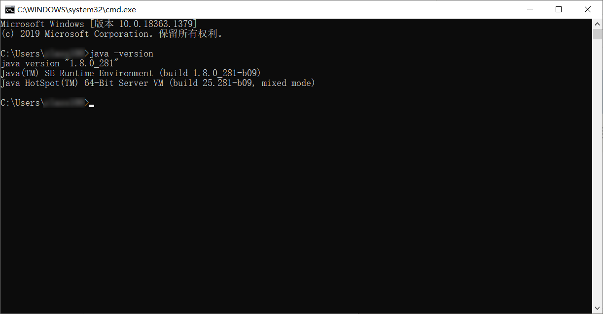
安装IntelliJ IDEA¶
JetBrains全家桶中也有专门用来写Java的，叫做IntelliJ IDEA，一般只说后面一个单词“哎迪儿”就知道是这个东西了。下载地址为：
https://www.jetbrains.com/idea/download/#section=windows
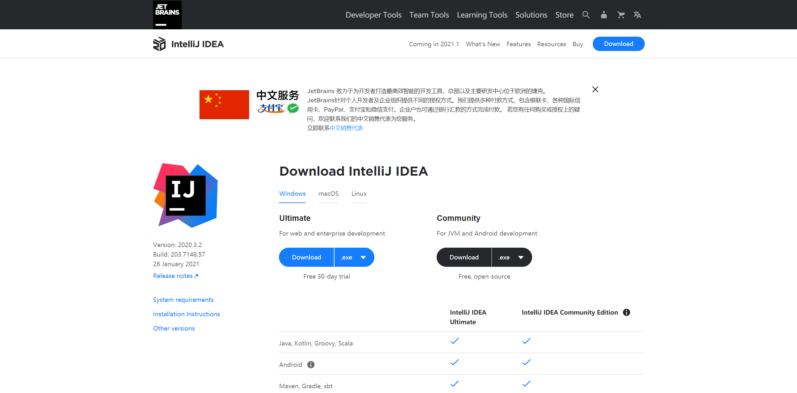
个人建议选择旗舰版，看着齐全。下载后双击ideaIU-2020.3.2.exe安装，先别忙着打开。
Maven仓库
Maven是用来管理Java第三方包的主流仓库工具，通过pom.xml文件来配置安装即可，在mvnrepository网站上能检索到所需配置信息：
官方仓库有时候下载速度很慢，本文用国内镜像替代，提高首次打开时同步仓库速度。我们先把Maven中央仓库从Apache替换成阿里云。打开本地目录D:\Program Files\JetBrains\IntelliJ IDEA 2020.3.2\plugins\maven\lib\maven3\conf：
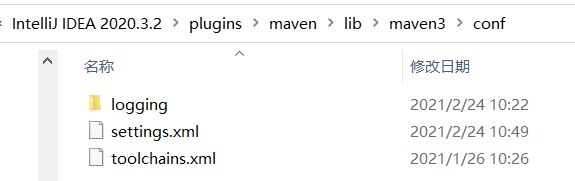
编辑settings.xml文件，找到<mirrors>标签，添加代码：
<mirror>
<id>aliyunmaven</id>
<mirrorOf>*</mirrorOf>
<name>阿里云公共仓库</name>
<url>https://maven.aliyun.com/repository/public</url>
</mirror>
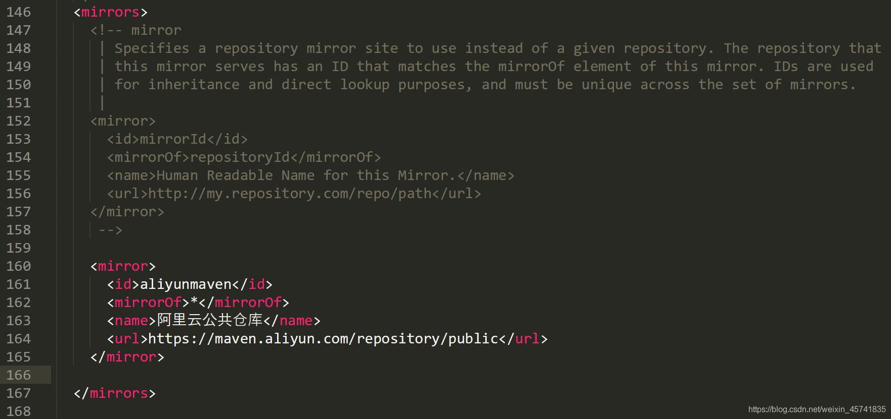
这是新版写法，官网https://maven.aliyun.com/mvn/guide有说明。
接着可以打开IDEA了，欢迎界面映入眼帘：
新建项目¶
选择新建Maven项目：
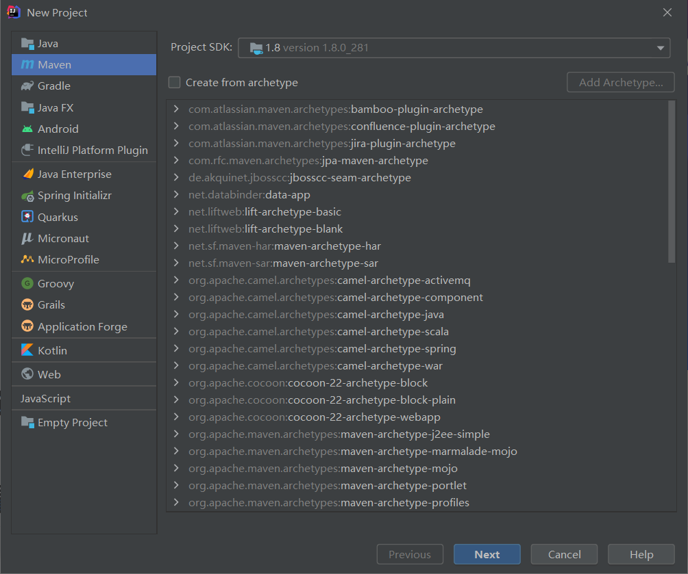
填写项目名和存放位置：
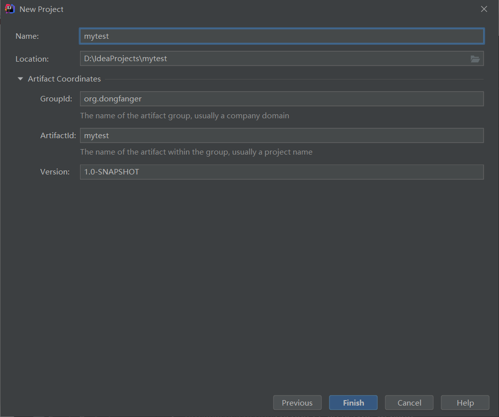
在pom.xml文件中添加仓库配置：
<repositories>
<repository>
<id>public</id>
<url>https://maven.aliyun.com/repository/public</url>
</repository>
</repositories>
<pluginRepositories>
<pluginRepository>
<id>public</id>
<url>https://maven.aliyun.com/repository/public</url>
</pluginRepository>
</pluginRepositories>
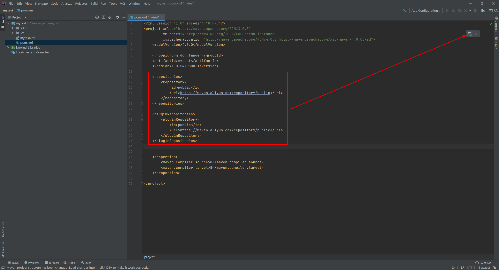
记得点击右上角的Load Maven Changes按钮，此时前面切换仓库的作用就体现出来了，右下角同步速度比默认明显增快。至此，以阿里云为Maven中央仓库的项目就创建好了。
添加TestNG¶
Java默认测试框架是JUnit，适合写单元测试，测试人员还是TestNG用的多，后者提供了更丰富的用例组织方式。首先打开上文所述的mvnrepository网站，搜索TestNG：
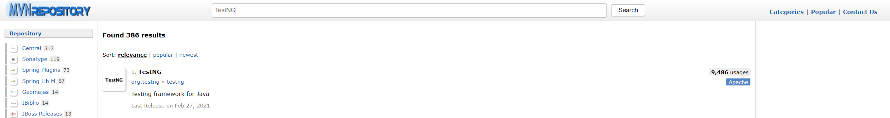
然后点进去选择某个用的多比较多的版本：
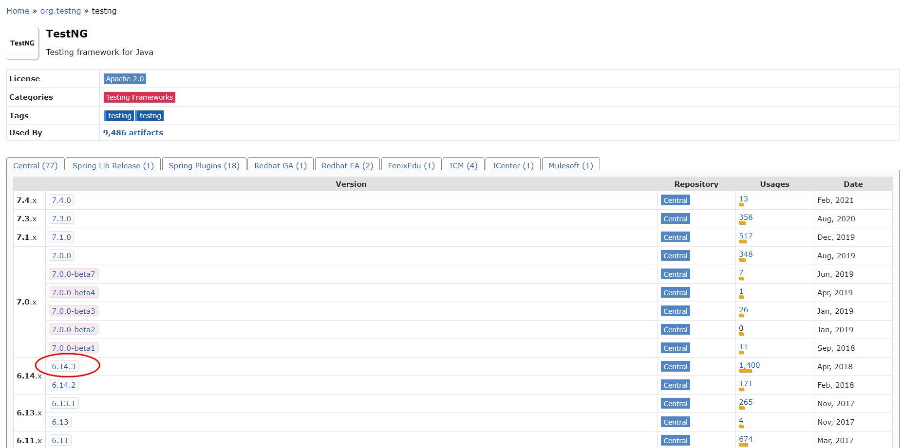
复制xml配置：
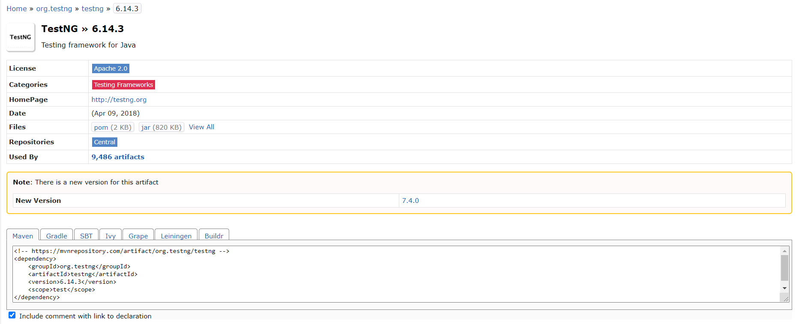
<!-- https://mvnrepository.com/artifact/org.testng/testng -->
<dependency>
<groupId>org.testng</groupId>
<artifactId>testng</artifactId>
<version>6.14.3</version>
<scope>test</scope>
</dependency>
打开项目的pom.xml，添加<dependencies></dependencies>标签：
<dependencies>
</dependencies>
再粘贴上刚才复制的TestNG配置：
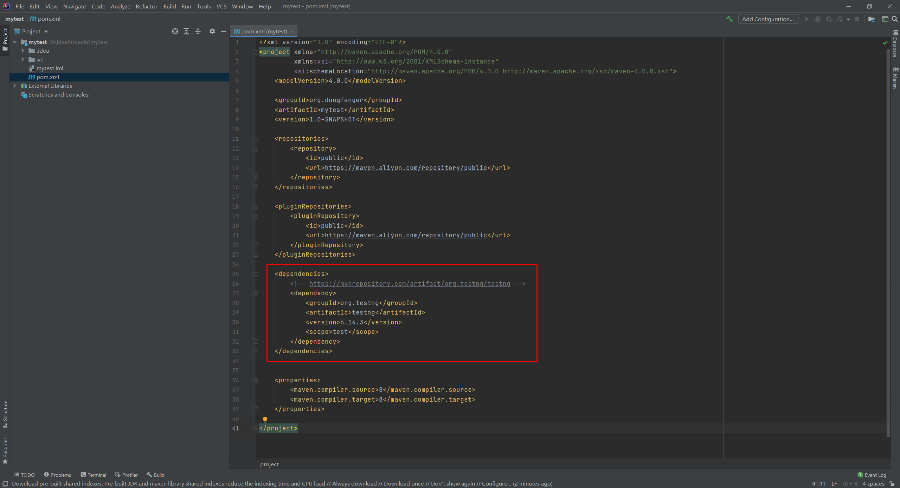
同样的别忘了点击右上角的Load Maven Changes按钮。这行代码<scope>test</scope>需要特别注意！它表示TestNG的作用范围是test：
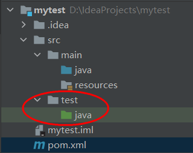
如果此时在src\main\java写TestNG的代码是会报错的：
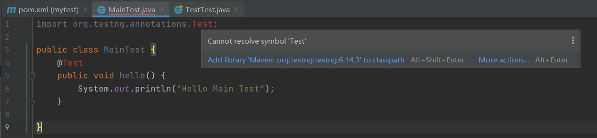
在src\test\java不会：
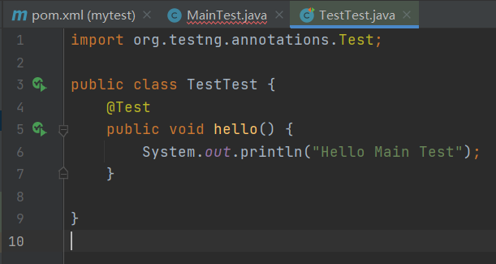
可选办法是要么去掉<scope>，要么就只在test\java目录下写测试代码。代码写好了，最后执行一下，点击绿色箭头：

运行成功。至此，整个Java环境就搭建好了。相关测试代码如下：
import org.testng.annotations.Test;
public class TestTest {
@Test
public void hello() {
System.out.println("Hello Main Test");
}
}
小结¶
本文介绍了从零开始搭建Java环境的操作步骤，相比以前现在速度更快的点有：一、不需要配置环境变量，安装时已经自动配好了，二、启动前切换中央仓库，国内镜像下载更快，三、本文给出了清晰的配置流程和代码，只需要照着操作，很快就能把环境搞定，写上Java代码。